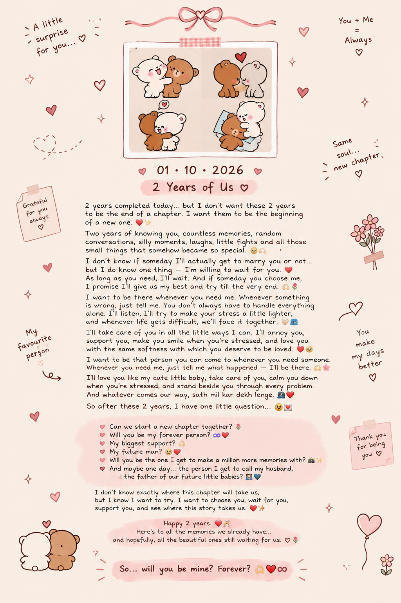

2 years completed today… but I don’t want these 2 years to be the end of a chapter. I want them to be the beginning of a new one. ❤️✨
Two years of knowing you, countless memories, random conversations, silly moments, laughs, little fights and all those small things that somehow became so special. 🥹🫶🏻
I don’t know if someday I’ll actually get to marry you or not… but I do know one thing — I’m willing to wait for you. ❤️ As long as you need, I’ll wait. And if someday you choose me, I promise I’ll give us my best and try till the very end. 🫶🏻🌷
I want to be there whenever you need me. Whenever something is wrong, just tell me. You don’t always have to handle everything alone. I’ll listen, I’ll try to make your stress a little lighter, and whenever life gets difficult, we’ll face it together. 🤍🫂
I’ll take care of you in all the little ways I can. I’ll annoy you, support you, make you smile when you’re stressed, and love you with the same softness with which you deserve to be loved. ❤️🥹
I want to be that person you can come to whenever you need someone. Whenever you need me, just tell me what happened — I’ll be there. 🫶🏻🌸
I’ll love you like my cute little baby, take care of you, calm you down when you’re stressed, and stand beside you through every problem. And whatever comes our way, sath mil kar dekh lenge. 🫂❤️🩹
So after these 2 years, I have one little question… 🥹💌
🌷 Can we start a new chapter together?
♾️❤️ Will you be my forever person?
🫶🏻 My biggest support?
🥹❤️ My future man?
📸✨ Will you be the one I get to make a million more memories with?
👨👩👧👦❤️ And maybe one day… the person I get to call my husband, and the father of our future little babies?
I don’t know exactly where this chapter will take us, but I know I want to try. I want to choose you, wait for you, support you, and see where this story takes us. ❤️🩹✨
Happy 2 years. ❤️🥂
Here’s to all the memories we already have… and hopefully, all the beautiful ones still waiting for us. ♡ 🌷✨